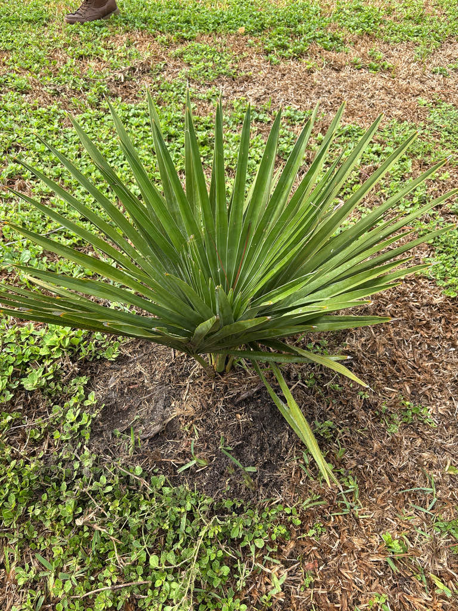

- This palm abandons the slender silhouette every other palm seems to agree on. Its solitary trunk reaches up to two feet in diameter — a near-white, columnar mass that reads as hand-carved stone rather than living wood. Where most palms sway, this one simply stands, an unyielding monolith.
- The crown is a quiet feat of hydraulic engineering. Each massive fan blade is anchored by a stiff central rib — the costa — that buckles the whole leaf into a shallow cup. Pair that geometry with a thick grey-white wax on the underside, and you have a dual-action system: shed the torrential wet-season rains, then seal in moisture through months of brutal dry-season drought.
- Both names are tributes: Copernicia honors the Polish astronomer Nicolaus Copernicus, while baileyana commemorates Liberty Hyde Bailey — the Cornell botanist widely credited with turning American horticulture from a craft into a science. It is a palm named for a stargazer and a gardener.
- Patience is non-negotiable with this species. In cooler climates it can take two to three decades to develop a visible trunk at all — the palm simply spends those years building roots and stacking leaf bases at ground level before it starts climbing.
The Bailey Palm is endemic to central and eastern Cuba, where it grows in open savannas, grasslands, and dry woodlands at low altitudes. It is adapted to poor, often clay or serpentine soils, and handles the long dry seasons of the Cuban interior with ease.
Outside Cuba it has spread almost entirely through the interest of palm collectors and botanical gardens. Its slow growth and eventual great size keep it out of mass-market nurseries, so specimens in parks like this one represent real horticultural patience. South Florida's warm subtropical climate is about the northern limit of its practical cultivation range.
- The species was first formally described in 1931 by Cuban botanist Frère León, and the name baileyana honors Liberty Hyde Bailey (1858–1954) — an American botanist and horticulturist who co-founded the American Society for Horticultural Science, established the first dedicated horticulture department in the United States, and is sometimes called the 'Dean of American Horticulture.' He was, among many other things, an authority on palms.
- In Cuba the leaves have long been harvested for practical use — thatching roofs and weaving hats, baskets, and other household goods. The Cuban common name yarey (or yareyón for the largest specimens) derives from a Taíno word for fan-leaf palms used in traditional thatching, a thread of language that runs straight back to the island's pre-colonial inhabitants.
- The palm is monoecious — both male and female flowers appear on the same tree — and is protandrous, meaning the pollen is released before the stigma on the same flower becomes receptive. That timing nudges cross-pollination between trees rather than self-pollination, which maintains genetic diversity across a population even when individual palms are widely spaced across a savanna.
The large, branched inflorescences carry thousands of small yellowish-white flowers and attract pollinating insects — bees in particular, and likely wind as well. Because the palm is protandrous, cross-pollination between trees is favored over self-pollination. In its native Cuban savannas, birds disperse the small black fruits and are an important part of the palm's natural regeneration.
In Florida cultivation, documented wildlife associations are modest. The inflorescences can attract generalist pollinators when in bloom, and fruiting trees may draw birds. It does not function as a larval host for Florida's butterflies or moths, and visitors looking for the park's richest pollinator habitat will find it in the native-plant areas.
Large, heavily branched inflorescences emerge from among the leaf bases and can extend up to about ten feet beyond the crown. Each inflorescence carries thousands of small yellowish-white bisexual flowers.
The palm is monoecious — both sexes appear on the same tree — and protandrous, so pollen is shed before the stigmas on the same inflorescence become receptive, which encourages cross-pollination between trees.
Small, round, and black at maturity, roughly three-quarters of an inch in diameter. Each fruit contains a single seed. Not edible.
Costapalmate and nearly circular in outline, reaching five to six feet across.
Leaf color is variable: the upper surface ranges from bright green to silver-grey depending on the individual, and the underside carries a thin layer of grey-white wax. Each leaf is divided into 110 to 130 stiff segments that radiate outward from a robust petiole. The petioles themselves are strongly armed with sharp curved teeth along their margins — worth watching for at close range.
A stiff central rib (the costa) extends from the petiole into the blade, bowing the whole leaf into a shallow cup shape.
Solitary, columnar, and notably stout — one of the widest trunks in the palm world, reaching 16 to 24 inches in diameter. Color is grey to near-white. Young plants are encased in persistent split leaf bases; these eventually fall away on the lower trunk, leaving ring scars on a smooth surface. In some individuals the trunk has a slight swelling or fusiform bulge at a certain height.
Start with the trunk: its sheer concrete-pillar girth is the first thing that stops you, but look closer at the surface itself — clean, horizontal ring scars where old leaf bases dropped away without splitting, leaving a smooth grey column. On mature individuals, check for a subtle fusiform swelling somewhere mid-shaft, an architectural quirk few visitors notice.
Next, run your eye up to the lower petioles: along their margins you will find a built-in security system of sharp, curved teeth — admire them from a polite distance.
Finally, isolate a single fan blade against the sky and track how the stiff segments radiate from the center, observing the distinct cup-shape the costa forces into the blade and the dusty silver-grey wax coating the underside — the reliable visual clue that sets this palm apart from common landscape fan palms.
The petioles carry sharp, curved marginal teeth that can scratch or cut — worth keeping in mind when walking close to the crown on a low-branched specimen. The small black fruits are not a food source and not toxic. No known toxicity to people or dogs.
Cuba is home to roughly 15 species of Copernicia, all endemic to the island. The genus is one of the defining features of Cuban palm flora, and C. baileyana — with its exceptionally stout trunk and enormous crown — is among the most architecturally striking of the group.
C. baileyana is sometimes confused in the trade with the closely related Copernicia fallaensis, which is generally larger overall. The most reliable field distinction is leaf color: C. fallaensis leaves are always silver or grey, while C. baileyana can be either silver or green.
Petiole length and leaf blade proportions also differ, but physical measurements of the two species overlap considerably in practice.
Separating the two species in cultivation is further complicated by hybridization: Copernicia species cross readily, and nursery stock not grown from wild-collected seed of a known isolated population may not be the true species as labeled. This uncertainty doesn't diminish the garden value of either palm — hybrids are equally beautiful — but it is worth keeping in mind when comparing specimens.

- © Randall Carter (CC-BY-NC), via iNaturalist